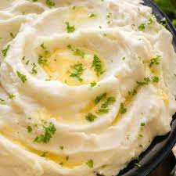

Whipped Mashed Potatoes

Description
4 simple ingredients, then follow our easy peasy steps, and you've got delicious whipped mashed potatoes.
Ingredients
- Potatoes of your choice (Russet or little red ones are yummiest)
- Salt
- Half and half or milk
- Butter - we love love butter
Steps
- Peel your potatoes. Rinse your potatoes.
- Boil some water. Once boiling, place your potatoes in there.
- Pour out water. Drain well. Preferably in the sink with a strainer.
- Place back in pan.
- Pour in milk or half and half while mixing with whisk or spoon (if no whisk is avaiable, you may have to mash and mix).
- Once those potatoes are nice and whipped_mashed - add in butter and salt to taste!